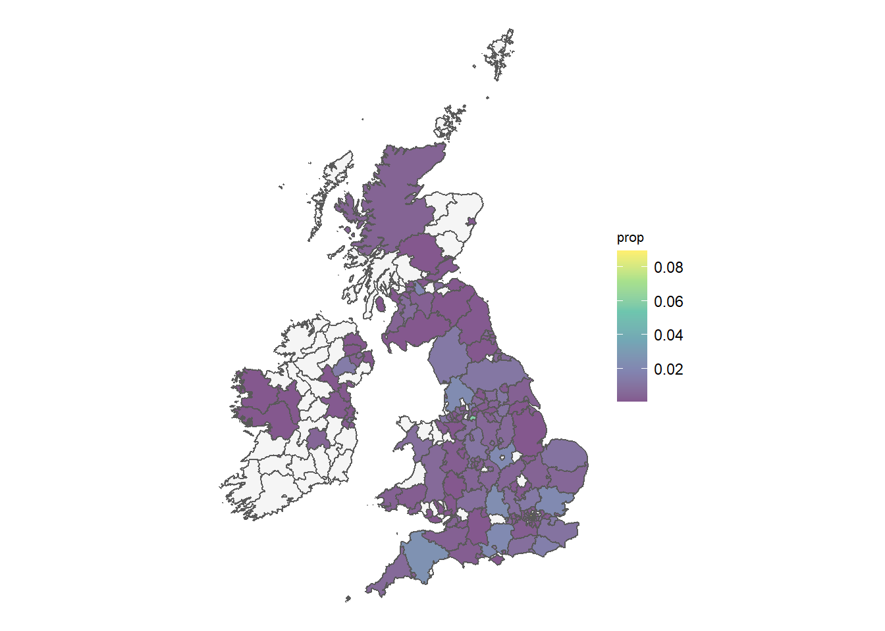
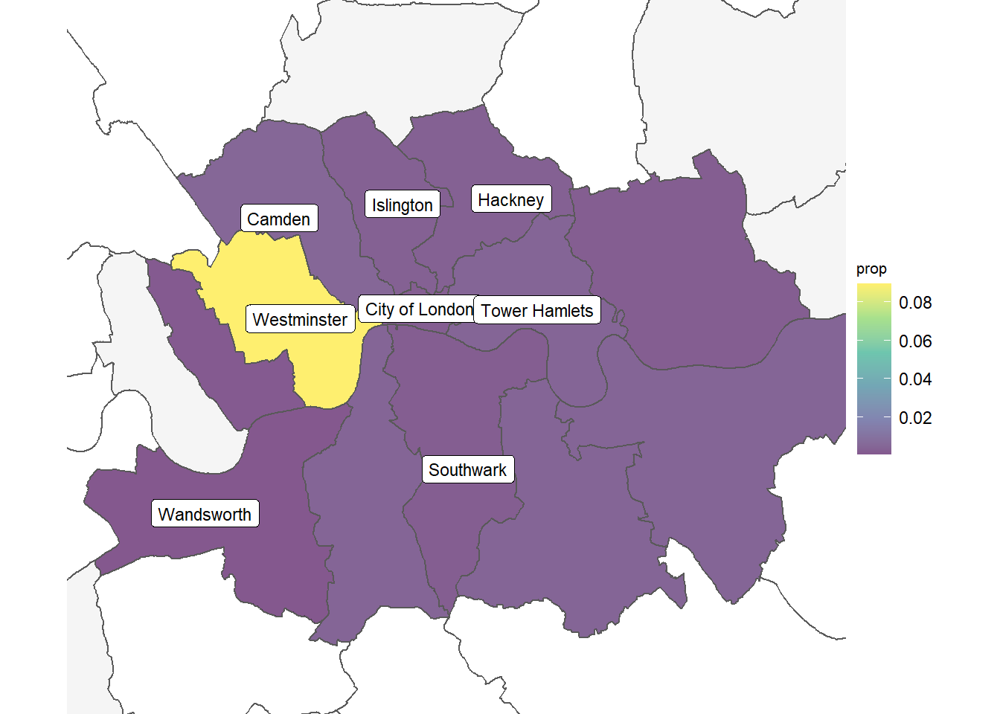
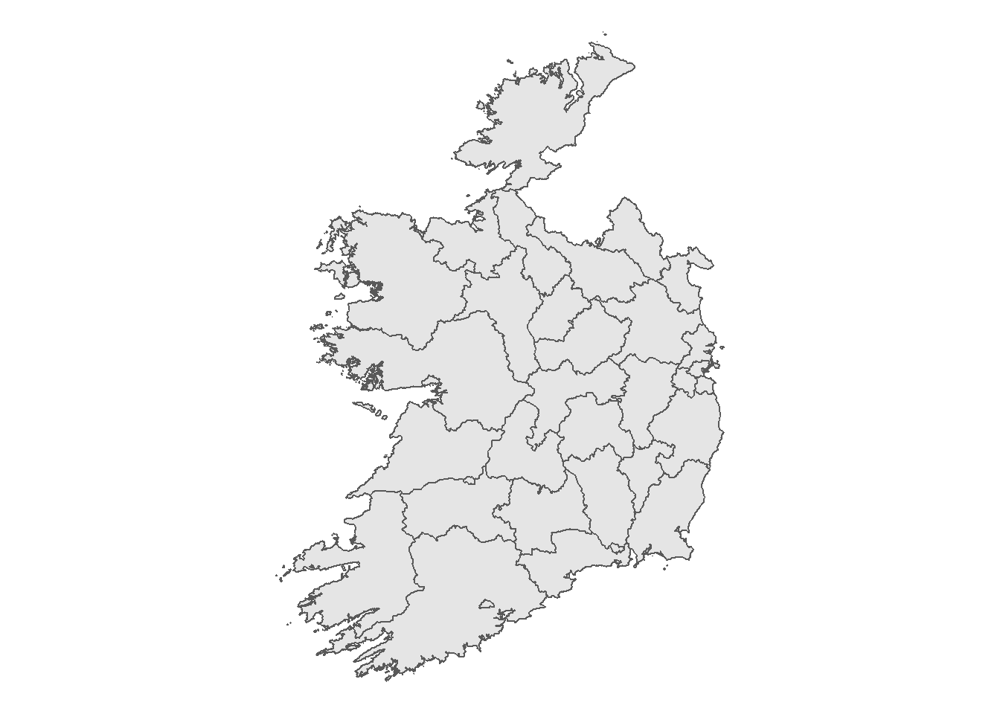
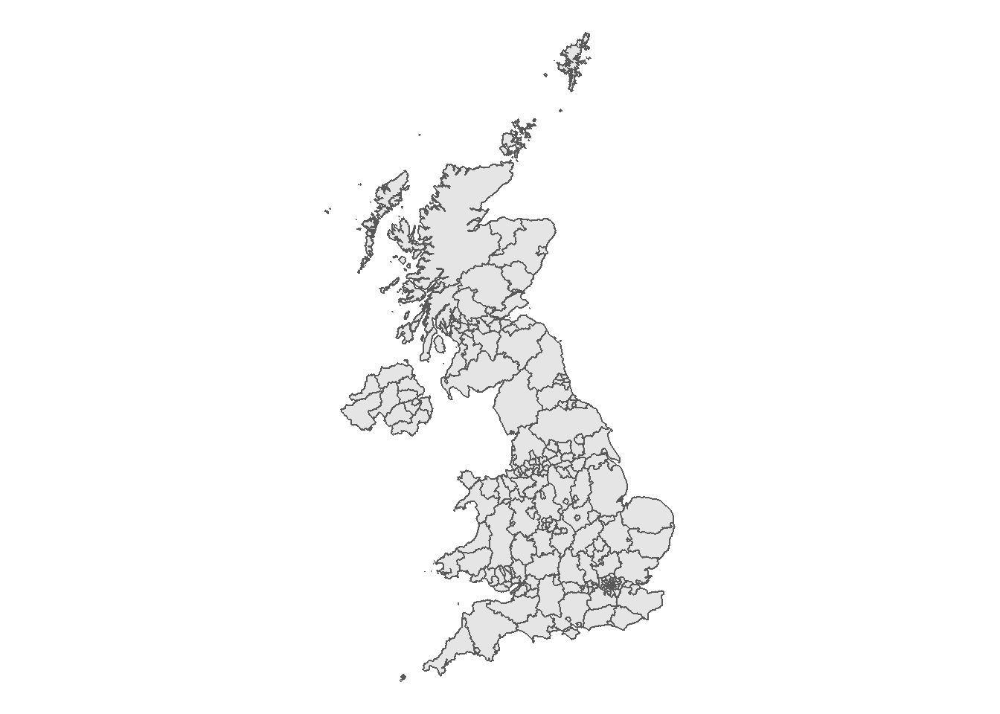
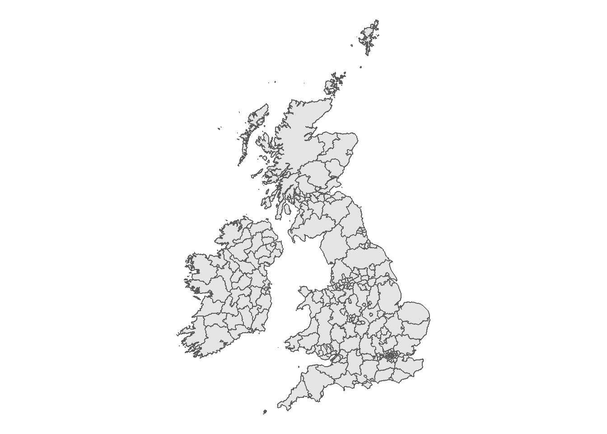
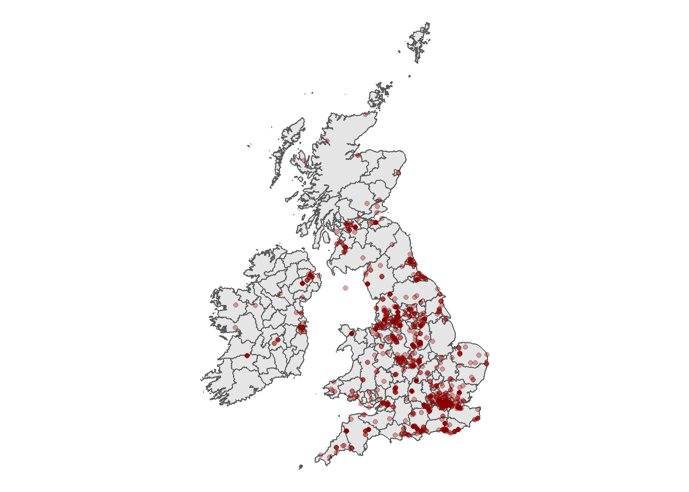

Parler is a social network that has a significant user base amount the “alt-right” and other fringe right-wing groups in the United States.
Following the US Capitol protest on the 6th January 2021 a number of service providers which provided backed infrastructure to Parler cesased their relationship with Parler and the site was forced to shut down on January 9th.
Prior to shutting down a large number of posts from the site were successfully scraped from the site and made more widely available.
A number of visualisations were subsquently built off the dataset, leveraging the GPS coordinates extracted from videos uploaded to the sit; including here and here
Most of the mapping resolved around the assault on the US Capitol on the 6th of January. Although not directly leveraging Parler data, The Washington Post have produced an excellent minute by minute account of the day link.e
The purpose of this analysis is to just focus on the UK and Ireland and to determine if there were any trends in Parler posts. Unfortunately, there doesn’t seem to be any distinct patterns with the volume of data posted to Parler from the UK and Ireland being relatively small. However, it’s still an interesting exercise and an opportunity to create some pretty graphs and work with shapefiles.
Before reviewing the maps, it’s important to bear in mind the following :
- GPS coordinates reflect the coordinates of where the video was recorded - it doesn’t necessarily imply that a Parler user is present at those coordinates. For instance, it’s possible that the posts were created by a US user who was on holidays.
- The number of posts exclusively relating to the UK and Ireland is relatively small and it would be incorrect to derive any conclusions based of any inferred patterns in the data.
Now, on to the maps ! The first map provides a visualisation of the GPS coordinates across the UK and Ireland :

Following this, each post was linked to the relevant County boundary and the map was color coded by their proportional contribution to the total number of posts.

This map does have a disadvantage in that very small geographical regions are not very visible. In particular, we can’t see the county of Westminster which is the county with the greatest number of posts.
The plot area can be narrowed to a specific region - London:

R Code
The following code was used to derive the underlying maps and tables. In order to create the following steps were completed:
- Import Parler data into R
- Create a basemap for the UK and Ireland using shapefiles
- Overlay the Parler posts on the map
- Link the Parler posts to the county of origin and plot posts by county
# Importing the libraries used to manipulate and visualise the data
library(tidyverse)## -- Attaching packages --------------------------------------- tidyverse 1.3.0 --## v ggplot2 3.3.3 v purrr 0.3.4
## v tibble 3.0.4 v dplyr 1.0.2
## v tidyr 1.1.2 v stringr 1.4.0
## v readr 1.4.0 v forcats 0.5.0## -- Conflicts ------------------------------------------ tidyverse_conflicts() --
## x dplyr::filter() masks stats::filter()
## x dplyr::lag() masks stats::lag()library(maps)##
## Attaching package: 'maps'## The following object is masked from 'package:purrr':
##
## maplibrary(sf)## Linking to GEOS 3.8.0, GDAL 3.0.4, PROJ 6.3.1# Defining the Projections
tm65 <- "+proj=tmerc +lat_0=53.5 +lon_0=-8 +k=1.000035 +x_0=200000 +y_0=250000 +a=6377340.189 +b=6356034.447938534 +units=m +no_defs"
OSGB <- "+proj=tmerc +lat_0=49 +lon_0=-2 +k=0.9996012717 +x_0=400000 +y_0=-100000 +ellps=airy +datum=OSGB36 +units=m +no_defs"Importing the Republic of Ireland Shapefile
The shapefile for the Republic of Ireland was sourced from the 2011 Census dataset.
# Importing the Irish Shape file
# path <- uncomment and set path
shp_ire <- st_read(file.path(path, "Census2011_Admin_Counties_generalised20m.shp"),
quiet = TRUE)
# Removing unneeded columns
shp_ire <- shp_ire %>% select(ID = NUTS3, County = COUNTYNAME)
# Setting the CRS (Coordinate Reference System) mapping to the file
st_crs(shp_ire) <- tm65
# Transforming to international CRS code 4326
shp_ire <- st_transform(shp_ire, crs=4326)
# Previewing the Republic of Ireland Shapefile
shp_ire %>%
ggplot() +
geom_sf() +
theme_void()
As we can see, the shapefile excludes Northern Ireland - this can be sourced from the Great Britain shapefile.
Importing the Great Britain Shapefile
The Great Britain shapefiles were sourced from the Office for National Statistics.
shp_gb <- st_read(file.path(path, "Counties_and_Unitary_Authorities__December_2019__Boundaries_UK_BFE.shp"),
quiet = TRUE)
# Removing unneeded columns
shp_gb <- shp_gb %>% select(ID = ctyua19cd, County = ctyua19nm)
# Setting the CRS mapping to the file
st_crs(shp_gb) <- OSGB
# Transforming to international CRS code 4326
shp_gb <- st_transform(shp_gb, crs=4326)
# Previewing the Republic of Ireland Shapefile
shp_gb %>%
ggplot() +
geom_sf() +
theme_void()
Merging the Shapefile
As the shapefiles are in the same dataframe format and have the same CRS mapping, it’s very simple to merge the shapefiles and plot the combined Great Britain and Ireland plot:
# Merging the shapefile
shp <- rbind(shp_ire, shp_gb)
# Plotting the output
baseplot <- shp %>%
ggplot() +
geom_sf() +
theme_void()
baseplot
Plotting the Parler Data
Using the merged shapefile, we can now import and overlay the Parler data
# Importing the Parler data
data <- read.csv(file.path(path, 'AllGeo.csv'))
# Filtering the data to limit to UK and Ireland
data <- data %>%
filter(LongitudeDD >= -11 & LongitudeDD <= 2 &
LatitudeDD >= 50 & LatitudeDD <= 61)
data_sf <- st_as_sf(data, coords=c("LongitudeDD","LatitudeDD"), crs=4326)
baseplot +
geom_sf(data = data_sf, alpha = .33, color='darkred')
In addition to plotting the points, we can use the st_intersects function to match each GPR coordinate to the County it was posted from.
intersection <- st_intersects(data_sf, shp)
intersection %<>% as.data.frame() %>% count(col.id)
intersection$prop <- intersection$n / sum(intersection$n)merge <- merge(shp, intersection, by.x = 0, by.y = "col.id", all=TRUE)
map <- merge %>%
ggplot() +
theme_void() +
geom_sf(aes(fill = prop)) +
scale_fill_viridis_c(na.value="#F5F5F5", alpha=0.66) +
#theme(legend.position = "none") + # hiding the legend
#theme(axis.title = element_blank()) + #hiding the x and y axes
theme(legend.position = 'right') +
theme(title = element_text(size = 12),
legend.title = element_text(size = 8))
#+ theme(plot.background= element_rect(fill = "#EBF5FB", colour = "#EBF5FB"))
map
We can also plot the data for the London region:
#map + coord_sf(ylim=c(51.4, 51.6), xlim=c(-0.25, +0.25)) +
# geom_sf_label(aes(label=County), color='black', size=3)
labels <- c('Westminster', 'Camden', 'Islington', 'City of London',
'Wandsworth', 'Tower Hamlets', 'Southwark', 'Hackney')
map + coord_sf(ylim=c(51.4, 51.6), xlim=c(-0.25, +0.1)) +
geom_sf_label(data=filter(merge, County %in% labels),
aes(label=County), color='black', size=3)